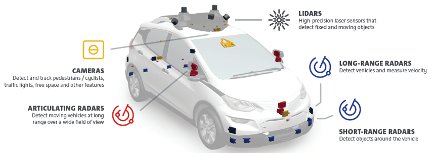

 The car’s software then processes all of these sensory inputs and the virtual map to plot a path and tell the car what to do. This path is decided by prediction and cost function-based algorithmic rules, which essentially calculate the potential costs of driving routes to choose a path that minimizes the amount of damage or the probability of damage occurring [6]. Additionally, obstacle detection and avoidance can help the software follow traffic rules and navigate obstacles. These programs use the input data to plan a course of action.
However, what if these sensory inputs are not accurate? Then the AV “map” would be incorrect. As previously described, the Lidar technology uses concentrated light to make its measurements, but this has some limitations. One safety concern is that obscuring light, like the sun glare on a wet road, may interfere with the sensor’s ability to measure distances effectively. Additionally, intense weather like snow, heavy rain, or fog may obscure the path of concentrated light, limiting the lidar’s ability to “see.” These limitations open the car up to potentially severe accidents caused by seemingly innocuous incidents.
Using lidar in combination with other types of surveillance and observance technologies will mitigate this risk as cameras and radar, alongside lidar, may triangulate upon accurate readings. Additionally, breakthroughs in radar technology, which are less limited by weather, contribute to better and fuller mapping systems of the road, leading to safer systems overall [3]. Intuitively, as one rises to higher levels of automation, more of these sensors and technologies will need to be used to guarantee accuracy because less driver attention, and more precaution, is required. So while level 2 automation may require three radar sensors and one camera, a level 5 AV may require more than ten radar sensors, eight cameras, and one lidar sensor onboard [5].
Do you think a car equipped with all of these sensors can see better than you can?The integration of these sensors is essential but difficult to consider. The vehicle must use the virtual map to identify important features, like pedestrians, lane edges, and other cars, to initiate a driving plan. Existing functions like the Convolutional Neural Network have proven helpful in this endeavor. The sensory data is used as an input, at which point the neural network processes the data and outputs the driving route for the car which is undertaken by the actuators and adjustments to steering, brakes, speed, and acceleration [1]. The training data for this neural network consists of camera frames and virtual maps with the essential features identified and an optimal path outlined. Then, with testing data, the car classifies its surroundings and plans the optimal route given its “training.” As a general rule, an increase in one level of automation requires around ten times more processing and computational power to integrate and process the information from more sensors in the network to reach an accurate output [5].
However, the technology used in these sensory systems is continuously improving, and the costs are decreasing. When automated vehicles become an awe-inspiring reality, the technology may be even more equipped to handle all driving conditions, which can open up the world to the benefits of AV technology safely and efficiently.
REFERENCES